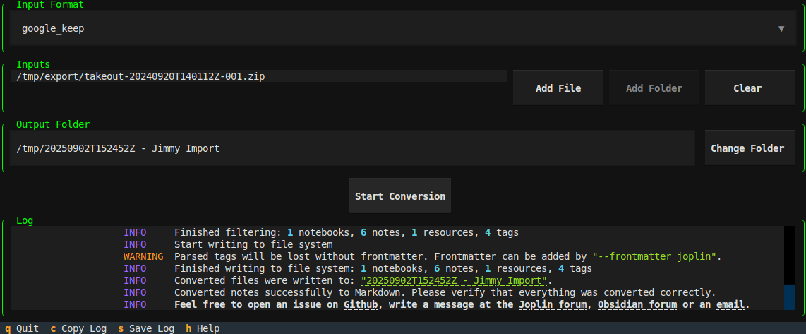
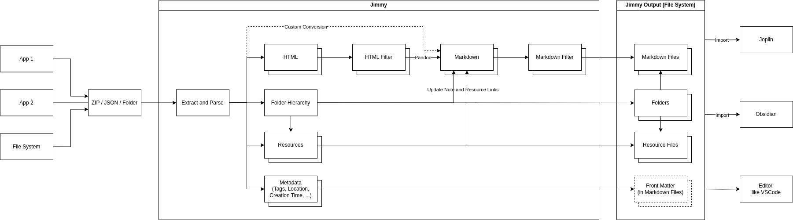

Welcome to Jimmy's documentation!¶
Jimmy is a tool to convert your notes from different formats to Markdown.
Installation¶
Download Jimmy here: Linux | Windows | macOS
Use Cases¶
- Migrate between note apps. Jimmy's output is compatible with Joplin, Obsidian and more.
- Save your notes in a future-proof, human-readable format.
- Prepare your notes for processing in a LLM.
Demo¶
Jimmy provides two interfaces:
- The Command Line Interface (CLI) can be used for scripting and provides the full set of features.
- The Terminal User Interface (TUI) can be used to do the conversion interactively. Currently it provides only a feature subset and is still in beta.

Example commands for Linux:
# do the conversion using an interactive TUI
jimmy-linux tui
# convert a single file supported by pandoc
jimmy-linux cli libre_office_document.odt
# convert all files in a folder
jimmy-linux cli path/to/folder
# convert a Google Keep export
jimmy-linux cli takeout-20240401T160516Z-001.zip --format google_keep
For a video, check the Github readme.
If there is an issue at download or execution, please take a look at the step-by-step instructions.
Features¶
- ✅ Several supported input formats
- ✅ Markdown + Front matter output
- Compatible with any text editor
- Can be imported to Joplin/Obsidian/...
- Preserves resources, tags and note links when possible
- ✅ Offline
- ✅ Open Source
- ✅ Cross-platform
- ✅ Standalone (no Docker, Python or Node.js installation required)
- ❎ No AI
Supported Apps¶
Export data from your app and convert it to Markdown. For details, click on the links.
A  Anki
Anki  Anytype
Anytype
B  Bear
Bear
C  Cacher
Cacher  CherryTree
CherryTree 
 ColorNote
ColorNote
D  Day One
Day One 
Drafts
 Dynalist
Dynalist
E 
F  Facebook
Facebook  FuseBase / Nimbus Note
FuseBase / Nimbus Note
G  Google Docs
Google Docs  Google Keep
Google Keep
J  Joplin
Joplin  jrnl
jrnl
N  Notion
Notion
O  Obsidian
Obsidian
Q  QOwnNotes
QOwnNotes
R  RedNotebook
RedNotebook  Roam Research
Roam Research
S  Simplenote
Simplenote 
 Synology Note Station
Synology Note Station
T  Telegram Textbundle / Textpack
Telegram Textbundle / Textpack  Tiddlywiki
Tiddlywiki  Tomboy-ng / Gnote
Tomboy-ng / Gnote  Turtl
Turtl
W  Wordpress
Wordpress
Z  Zettelkasten
Zettelkasten  Zim
Zim  Zoho Notebook
Zoho Notebook
Supported Formats¶
Convert a single file or a folder (recursively). Files of these formats will be converted to Markdown. The formats can be mixed. For example, you can convert a folder with two Asciidoc files and one DOCX file. The conversion result will be a folder with three Markdown files and the corresponding attachments.
A 
C  CSV
CSV
D DocBook  DOCX
DOCX
E EML  EPUB
EPUB
F  Fountain
Fountain
H  HTML
HTML
J  Jupyter Notebook
Jupyter Notebook
M  Markdown
Markdown  MediaWiki
MediaWiki
O  ODT
ODT  OPML
OPML
R reStructuredText RTF
T txt2tags
General Usage¶
- Export/backup notes from your note application
- Run
jimmy, which converts your notes to Markdown - Import the result to Joplin/Obsidian or even use any editor like VSCode
Simplified Internal Workflow¶
